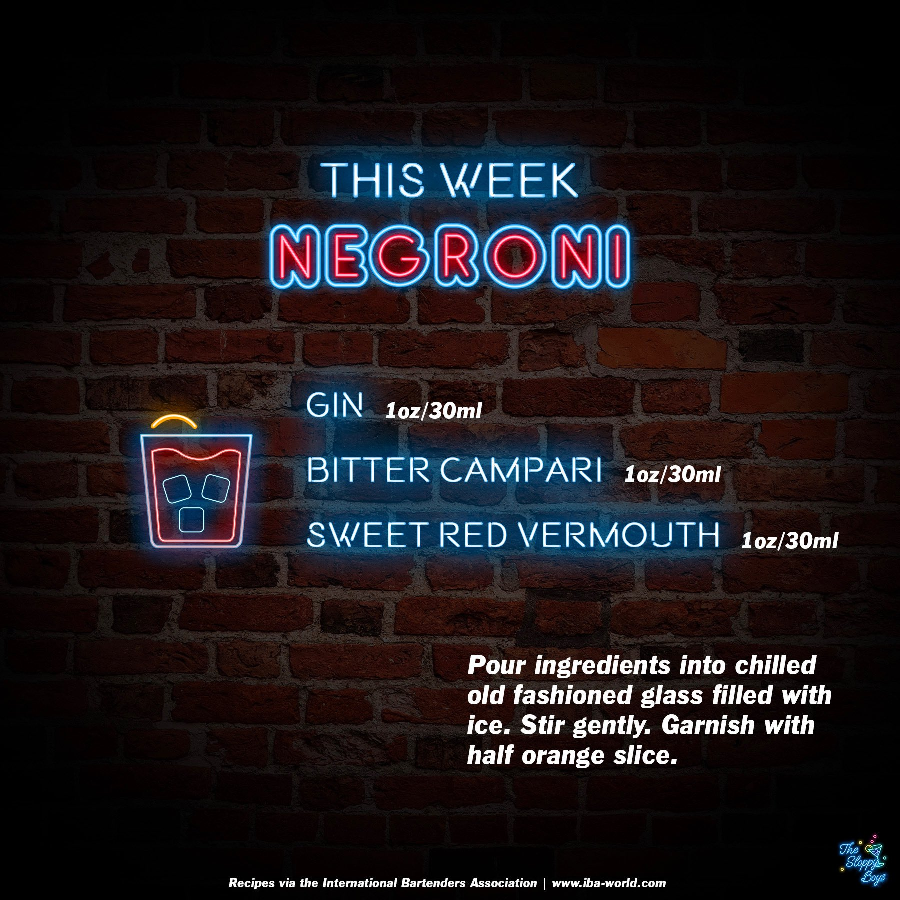

The Sloppy Boys Podcast
Podcast
About

Negroni
Ingredients
Gin (1oz/30ml)
Bitter Campari (1oz/30ml)
Sweet Red Vermouth (1oz/30ml)
Steps
Pour ingredients into chilled old fashioned glass filled with ice.
Stir gently.
Garnish with half orange slice.
Notes
Episode 18 - Negroni (February 19, 2021)
IBA Negroni Recipe
Artwork by The Sloppy Boys